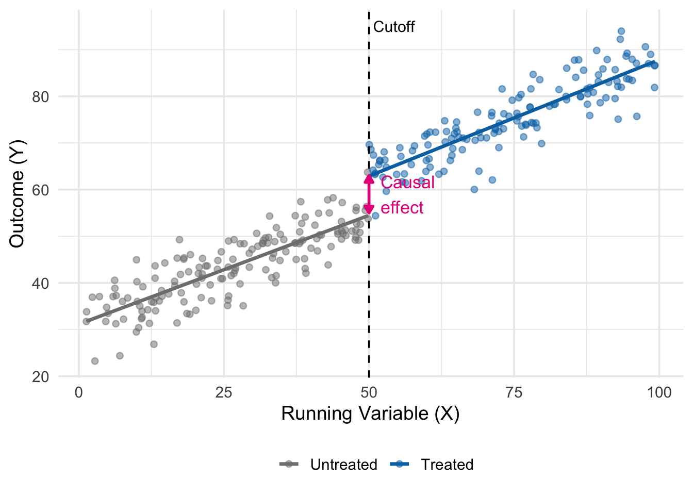
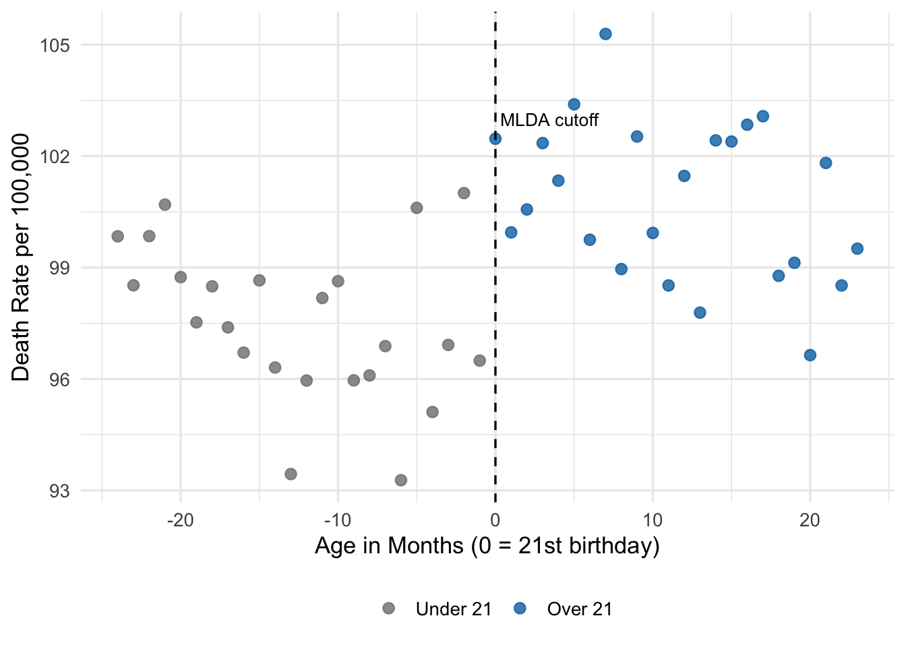
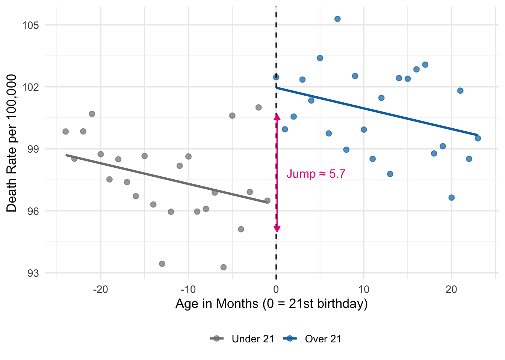
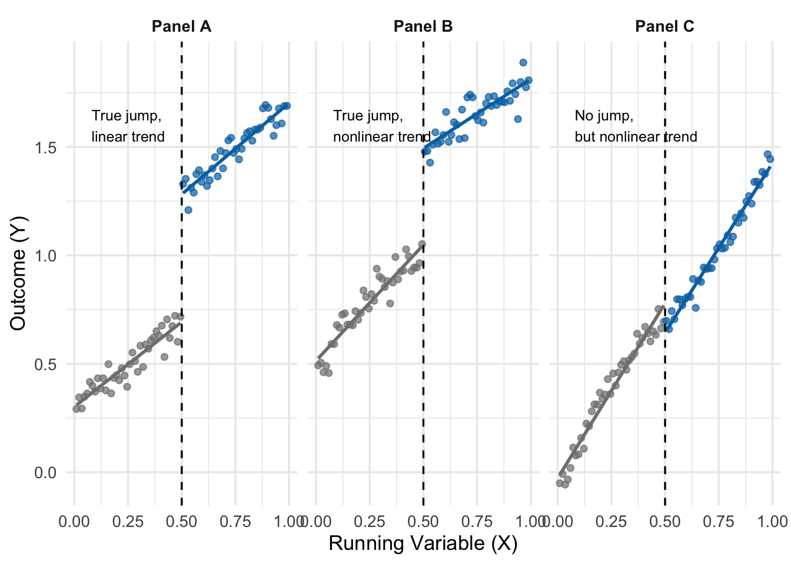
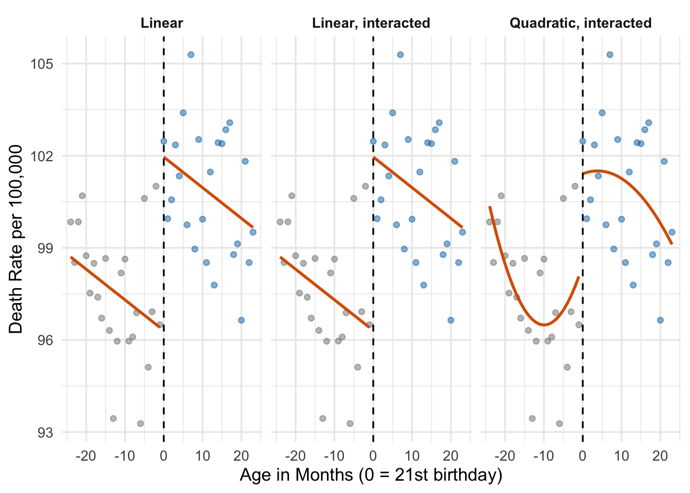
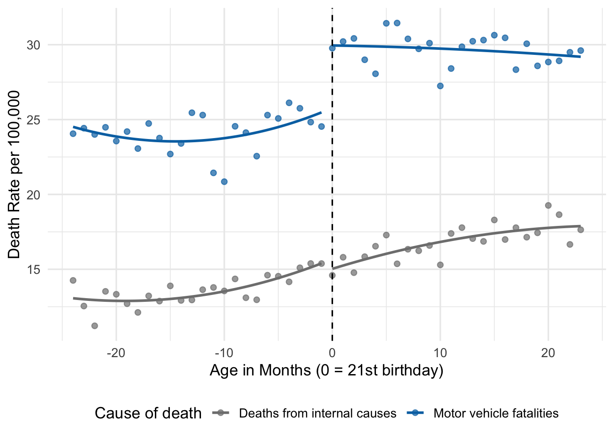
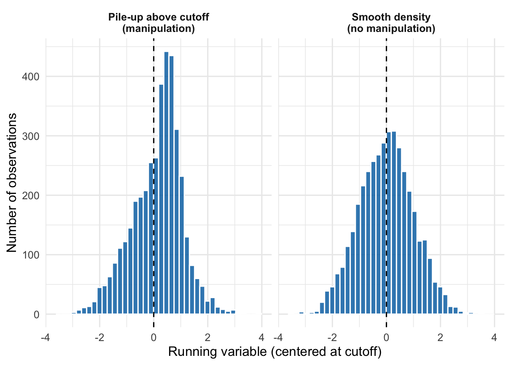
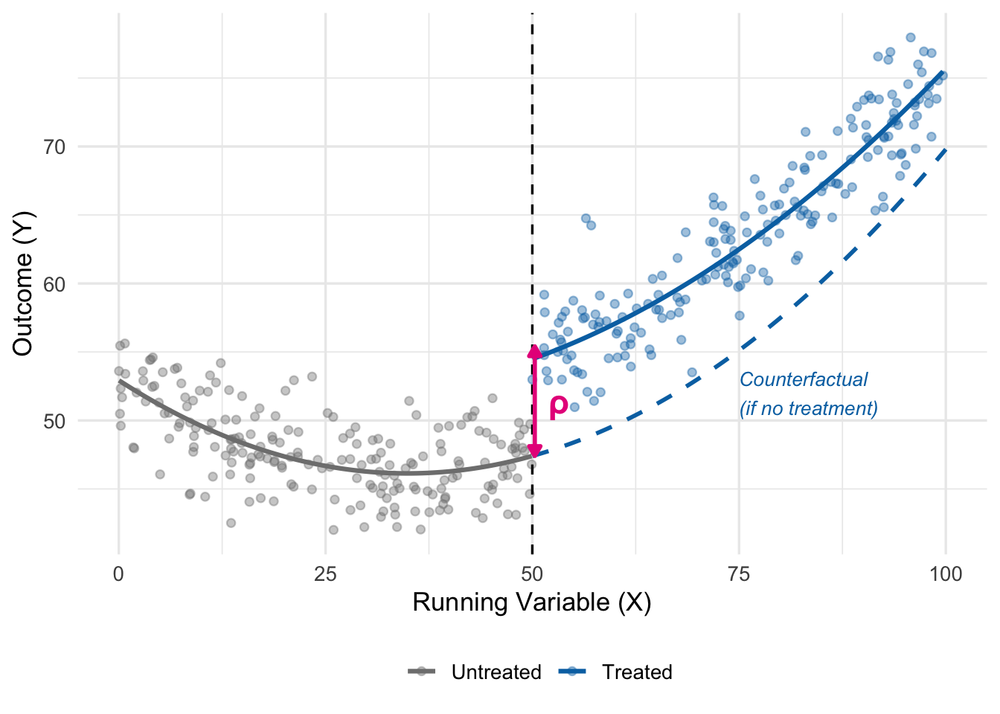

15 Regression Discontinuity
Key Questions
- What is a regression discontinuity (RD) design, and when can we use it?
- How do cutoffs in the real world generate natural experiments?
- What is a “running variable,” and what role does it play?
- How do we choose between parametric and nonparametric RD, and what is a bandwidth?
- How do we test whether an RD design is credible?
Suggested Readings
- Angrist & Pischke, Mastering ’Metrics, Chapter 4.
- Carpenter & Dobkin (2009), “The Effect of Alcohol Consumption on Mortality: Regression Discontinuity Evidence from the Minimum Drinking Age,” American Economic Journal: Applied Economics.
Up to this point, we have built a toolkit of causal inference methods that rely on finding variation in treatment that is as good as random. Randomized trials give us random assignment directly. Multivariate regression controls for observables. Fixed effects absorb time-invariant unobservables. Difference-in-differences uses control units to net out common trends.
Each of these methods takes the same basic approach: find a comparison group whose outcomes plausibly resemble what the treated group would have done without treatment. The tricky part is always making a credible case that this is true.
This chapter introduces one more tool—arguably the cleanest and most transparent design in the applied economist’s kit—regression discontinuity (RD). RD takes advantage of a feature of modern life that may seem, at first, to be an obstacle to causal inference: the many rigid rules and cutoffs that determine who gets what. Speed limits, age thresholds, grade cutoffs, income ceilings for benefits, geographic borders, test-score minimums, and vote shares in close elections all share a common feature: a sharp change in treatment at a known cutoff. As we will see, rigid rules that at first glance seem to eliminate randomness actually generate valuable experiments.
15.1 From Control Units to Cutoffs
15.1.1 Where RD Fits in Our Toolkit
Recall from Chapter 12 that the difference-in-differences design relies on control units—a comparison group that tells us what would have happened to the treated group in the absence of treatment. Its credibility rests on parallel trends: absent treatment, treated and control outcomes would have moved together.
Regression discontinuity takes a very different approach. Instead of comparing units across groups over time, it compares units just above and just below a cutoff on some measured variable. The logic is simple: units right next to the cutoff are almost identical in every way that matters, except that one group receives treatment and the other does not. If the cutoff is truly a bright line that determines treatment—and if units cannot precisely manipulate their position on either side of it—then whether you fall to the left or right of the cutoff is essentially a coin flip.
Regression Discontinuity Design
A regression discontinuity (RD) design estimates the causal effect of a treatment by comparing units that fall on either side of a known cutoff value of a continuous “running variable.” Because treatment assignment changes abruptly at the cutoff while other factors change smoothly, the jump in outcomes at the cutoff can be interpreted as the causal effect of treatment.
15.1.2 Why Rigid Rules Create Experiments
Human behavior is constrained by rules. In the United States:
- The minimum legal drinking age (MLDA) is 21. Someone who turns 21 on Tuesday has legal access to alcohol; someone who turns 21 on Wednesday does not (until Wednesday).
- Public school funding often changes based on class-size thresholds. A school with 40 students in a grade gets one teacher per section; a school with 41 students hires a second teacher and splits the class in half.
- Selective schools admit students whose test scores exceed a cutoff but reject those just below it.
- Means-tested programs like Medicaid and SNAP provide benefits to families below an income threshold and not to families above it.
- In close elections, the candidate with 50.01% of the vote takes office while the candidate with 49.99% does not.
In each case, a small change in the relevant variable—a few days of age, a percent of the vote, a single test-score point—flips a binary treatment on or off. This is the signature of an RD design.
15.1.3 Why This Is a Natural Experiment
Consider someone who turns 21 tomorrow versus someone who turned 21 yesterday. Over a two-day interval, they are nearly indistinguishable in terms of physical maturity, social environment, and life experience. The only meaningful difference between them is that one is legally allowed to walk into a bar and the other is not.
If we were designing the ideal experiment to measure the effect of legal alcohol access, we could not do much better than this. A true RCT on drinking would be unethical and impossible to implement. But the MLDA has, in effect, run exactly such an experiment—for decades, on a massive scale, across the entire country. The only challenge is that the “treatment group” (age \(\geq\) 21) and “control group” (age < 21) differ in one obvious way: age itself. As we will see, managing this complication is the central methodological challenge of RD.
Figure 15.1 shows the core idea. The running variable \(X\) could be an age, a test score, a vote share, or an income threshold. Below the cutoff, we observe only untreated units (grey). Above the cutoff, we observe only treated units (blue). Both groups follow smooth trends in \(X\), but at the cutoff there is a sudden jump in the outcome. This jump is the causal effect.
15.2 The Minimum Drinking Age
15.2.1 Birthdays and Funerals
Our path into RD follows Carpenter and Dobkin’s (2009) classic study of the minimum legal drinking age, which Angrist and Pischke use as the flagship example in their Chapter 4.
The American MLDA is 21. Critics of this rule—including college presidents who have signed on to the Amethyst Initiative—argue that a lower drinking age would promote responsible, moderate alcohol consumption and reduce dangerous binge drinking. Proponents counter that the MLDA, blunt as it is, saves lives by restricting young people’s access to alcohol. Who is right?
This is a hard question to answer. We cannot randomly assign legal drinking access to some 21-year-olds and not others. We cannot persuade a state to randomize the MLDA at the individual level for research purposes. And simple before-and-after comparisons are contaminated by all sorts of developmental trends as young people mature.
Fortunately, the MLDA itself generates a natural experiment. On the day a young person turns 21, her legal access to alcohol changes instantly. Her physical, emotional, and cognitive maturity has not changed appreciably—she is, biologically speaking, the same person she was yesterday. But the law sees her differently.
Carpenter and Dobkin compared death rates for young people just below age 21 to those just above. Their findings echo Animal House: there is a striking and persistent increase in mortality at the 21st birthday, driven primarily by motor vehicle accidents, suicides, and other alcohol-related deaths.
15.2.2 A First Look at the Data
To build intuition, let’s simulate data that mirrors the patterns Carpenter and Dobkin documented. We will work with death rates by month of age (a 30-day interval) from age 19 to age 23, which is the window in AP Table 4.1.
set.seed(2025)
# Create simulated data mirroring Carpenter & Dobkin (2009)
mlda_data <- tibble(
# Month of age, centered at 21st birthday (0 = 21st birthday)
months = seq(-24, 23, by = 1)
) |>
mutate(
age = 21 + months / 12,
# Legal drinking treatment dummy
over21 = as.numeric(months >= 0),
# True data-generating process:
# - slight downward trend in death rates with age
# - jump of 7.7 per 100,000 at the 21 cutoff (AP Table 4.1, Col 1)
# - small amount of noise
death_rate = 95 - 0.15 * months + 7.7 * over21 + rnorm(n(), 0, 2.0)
)
head(mlda_data)# A tibble: 6 × 4
months age over21 death_rate
<dbl> <dbl> <dbl> <dbl>
1 -24 19 0 99.8
2 -23 19.1 0 98.5
3 -22 19.2 0 99.8
4 -21 19.2 0 101.
5 -20 19.3 0 98.7
6 -19 19.4 0 97.5Here, months is the running variable—time in months relative to the 21st birthday. The variable over21 is the treatment indicator, equal to 1 on or after the birthday and 0 before. The outcome death_rate is deaths per 100,000 per year.
Let’s plot it:
ggplot(mlda_data, aes(x = months, y = death_rate,
color = factor(over21))) +
geom_point(size = 2.5, alpha = 0.8) +
geom_vline(xintercept = 0, linetype = "dashed", color = "black") +
scale_color_manual(values = c("0" = "grey50", "1" = "#0072B2"),
labels = c("Under 21", "Over 21")) +
annotate("text", x = 0, y = 103, label = "MLDA cutoff",
hjust = -0.05, size = 3.5) +
labs(x = "Age in Months (0 = 21st birthday)",
y = "Death Rate per 100,000",
color = "") +
theme_minimal(base_size = 13) +
theme(legend.position = "bottom")
Eyeballing Figure 15.2, there is a visible upward shift in death rates when the running variable crosses zero. Death rates below the cutoff cluster around 95; rates above the cutoff look noticeably higher. The goal of RD is to put a number on this visual pattern.
15.3 The Sharp RD Setup
15.3.1 Running Variables and Treatment Rules
The MLDA gives us a clean example of a sharp RD design, where treatment status is a deterministic, discontinuous function of a running variable.
Let \(a\) denote age and \(D_a\) denote the treatment indicator for legal drinking:
\[ D_a = \begin{cases} 1 & \text{if } a \geq 21 \\ 0 & \text{if } a < 21 \end{cases} \tag{15.1}\]
Two features of this setup matter:
- Deterministic assignment. Once we know a person’s age, we know their treatment status with certainty. There is no randomness in the assignment rule.
- Discontinuous assignment. No matter how close age gets to 21, \(D_a\) does not change until age actually crosses 21.
Key RD Vocabulary
- The running variable (also called the forcing variable or score) is the continuous variable whose value determines treatment. In the MLDA example, it is age.
- The cutoff (also called the threshold) is the value of the running variable at which treatment status changes. In the MLDA example, the cutoff is 21.
- Sharp RD describes designs where treatment status is a deterministic function of the running variable, jumping cleanly from 0 to 1 (or vice versa) at the cutoff. This chapter focuses on sharp RD. A fuzzy RD variant, where the cutoff shifts only the probability of treatment, is briefly noted at the end of the chapter.
15.3.2 Why RD Is Different from Regression Control
It is tempting to think of RD as “just regression with a dummy for being over the cutoff.” Mechanically, that is what we will do. Conceptually, however, RD is quite different from the kind of regression adjustment we did in Chapter 5.
In multivariate OLS, we compare treated and control units at the same values of the controls, hoping that after conditioning we are comparing apples to apples. In RD, there is no overlapping region. There is no age at which we observe both 20-year-olds with legal access to alcohol and 21-year-olds without it. Every unit below the cutoff is untreated, and every unit above it is treated.
This means the validity of RD rests on a willingness to extrapolate—but only a tiny distance, across the cutoff. We need to believe that, had the MLDA not existed, the relationship between age and death rates would have continued smoothly through age 21. The jump at age 21 is the “extra” mortality caused by legal alcohol access, because the smooth age trend has been extrapolated from one side of the cutoff to the other.
15.3.3 Why RD Has No Classical Omitted Variable Bias
Here is a remarkable property of sharp RD: if we correctly model the relationship between the running variable and the outcome, the design suffers no classical omitted variable bias. Why? Because treatment is a deterministic function of the running variable, any omitted variable that is correlated with treatment is also correlated with (a function of) the running variable. Controlling for the running variable adequately therefore automatically controls for every such omitted variable.
This is the great strength of RD: you can explain in one or two sentences why the design is credible, and the argument is transparent enough that a skeptical reader can push back on specific steps. It is also the great weakness: “correctly modeling the running variable” is easier said than done, as we will see in a moment.
15.4 The Simple Sharp RD Regression
15.4.1 A Linear Model
The simplest sharp RD regression uses a linear control for the running variable:
\[ Y_a = \alpha + \rho D_a + \gamma a + e_a \tag{15.2}\]
where:
- \(Y_a\) is the outcome (e.g., the death rate in month of age \(a\))
- \(D_a = 1\) if \(a \geq a_0\) (the cutoff) and 0 otherwise
- \(a\) is the running variable (age in months)
- \(\rho\) is the RD estimate—the causal effect of treatment
- \(\gamma\) captures the smooth trend in outcomes as the running variable changes
- \(e_a\) is an error term
The interpretation of \(\rho\) is simple: it is the vertical jump in the fitted regression line at the cutoff. Holding the running variable fixed at \(a_0\), the predicted outcome just below the cutoff is \(\alpha + \gamma a_0\). Just above the cutoff, it is \(\alpha + \gamma a_0 + \rho\). The difference is exactly \(\rho\).
15.4.2 Estimating the Simple Model
Let’s estimate Equation 15.2 on our simulated MLDA data. We will use feols() from fixest, with heteroskedasticity-robust standard errors:
# Simple linear RD with over-21 dummy and linear control for age
simple_rd <- feols(death_rate ~ over21 + months,
vcov = "HC1",
data = mlda_data)
summary(simple_rd)OLS estimation, Dep. Var.: death_rate
Observations: 48
Standard-errors: Heteroskedasticity-robust
Estimate Std. Error t value Pr(>|t|)
(Intercept) 96.306147 0.758703 126.93520 < 2.2e-16 ***
over21 5.651080 1.219646 4.63338 0.000030843 ***
months -0.099812 0.039602 -2.52035 0.015339076 *
---
Signif. codes: 0 '***' 0.001 '**' 0.01 '*' 0.05 '.' 0.1 ' ' 1
RMSE: 1.93699 Adj. R2: 0.430343The coefficient on over21 is our estimate of \(\rho\). It should be close to the true treatment effect of 7.7. This is very close to Carpenter and Dobkin’s estimate from Table 4.1, column (1) of AP.
The coefficient on months is the slope \(\gamma\), capturing the smooth (mildly declining) trend in death rates as young people age.
15.4.3 Visualizing the RD Fit
The right way to present a sharp RD result is to show the regression graphically. We compute fitted values from the model and overlay them on the scatter.
mlda_data <- mlda_data |>
mutate(yhat_linear = predict(simple_rd))
ggplot(mlda_data, aes(x = months, y = death_rate, color = factor(over21))) +
geom_point(size = 2.2, alpha = 0.7) +
geom_line(aes(y = yhat_linear), linewidth = 1.1) +
geom_vline(xintercept = 0, linetype = "dashed") +
scale_color_manual(values = c("0" = "grey50", "1" = "#0072B2"),
labels = c("Under 21", "Over 21")) +
annotate("segment",
x = 0.1, xend = 0.1,
y = 95, yend = 95 + coef(simple_rd)["over21"],
arrow = arrow(type = "closed", length = unit(0.2, "cm"),
ends = "both"),
color = "#e7298a") +
annotate("text", x = 1.2,
y = 95 + coef(simple_rd)["over21"] / 2,
label = paste0("Jump \u2248 ", round(coef(simple_rd)["over21"], 1)),
color = "#e7298a", hjust = 0, size = 4.2) +
labs(x = "Age in Months (0 = 21st birthday)",
y = "Death Rate per 100,000",
color = "") +
theme_minimal(base_size = 13) +
theme(legend.position = "bottom")
The two line segments in Figure 15.3 share the same slope—\(\gamma\) in Equation 15.2—but are offset from each other by \(\rho\) at the cutoff. That vertical gap is our RD estimate.
15.5 Running Variable Controls: Going Beyond Linear
15.5.1 Why Linear Might Not Be Enough
The simple model assumes the relationship between the running variable and the outcome is linear on both sides of the cutoff. That might be good enough, but it might not. If the true relationship is curved, a linear fit will be forced to compromise—and may mistake nonlinearity in the underlying trend for a treatment effect.
Figure 15.4 makes this point clearly, echoing Figure 4.3 in AP. Three different data-generating processes produce three different RD situations.

Panel A shows the ideal case: the relationship is linear, and the jump at the cutoff is the true treatment effect. Panel B shows a slightly more complicated case where the underlying relationship has some curvature, but the discontinuity is still obvious. Panel C is the dangerous one. Here the true relationship is a smooth (if weirdly-shaped) curve with no treatment effect at all, but a naive linear fit on each side of the cutoff would produce two segments with a large gap at the cutoff.
Panel C illustrates the central challenge of RD: how do we make sure a nonlinear trend in the running variable is not being misread as a jump?
15.5.2 Two Strategies for Handling Nonlinearity
There are two broad approaches—neither perfect, both useful.
- Model the nonlinearity. Include higher-order terms in the running variable (quadratic, cubic) and possibly allow the slope to differ on either side of the cutoff. This is the parametric approach.
- Zoom in on the cutoff. Restrict attention to observations within a narrow window of the cutoff. Near the boundary, nonlinearities become much less of a worry, because any smooth curve looks roughly linear over a short interval. This is the nonparametric (or local) approach.
We will look at both in turn.
15.6 Parametric RD: Polynomials and Interactions
15.6.1 Adding a Quadratic Term
The simplest extension to our linear model adds a quadratic term:
\[ Y_a = \alpha + \rho D_a + \gamma_1 a + \gamma_2 a^2 + e_a \tag{15.3}\]
Here \(\gamma_1 a + \gamma_2 a^2\) is a smooth quadratic function of the running variable. \(\rho\) is still the jump at the cutoff.
15.6.2 Allowing Different Slopes on Each Side of the Cutoff
A related modification allows the relationship between age and death rates to have different slopes on either side of the cutoff. Maybe the decline in death rates slows (or accelerates) once drinking becomes legal. We can allow this by interacting the running variable with the treatment dummy.
To keep the interpretation of \(\rho\) clean, it is standard to center the running variable at the cutoff—that is, replace \(a\) with \((a - a_0)\). In our data the running variable months is already centered (it equals 0 at the 21st birthday), so we can use it directly.
The interacted model is:
\[ Y_a = \alpha + \rho D_a + \gamma (a - a_0) + \delta (a - a_0) D_a + e_a \tag{15.4}\]
With the running variable centered at the cutoff, \(\rho\) is still the jump in average outcomes at the cutoff, and \(\delta\) tells us how the slope changes after treatment.
15.6.3 A Richer Model
We can combine both ideas to allow a different quadratic function on each side of the cutoff:
\[ \begin{aligned} Y_a = &\alpha + \rho D_a + \gamma_1 (a - a_0) + \gamma_2 (a - a_0)^2 \\ &+ \delta_1 (a - a_0) D_a + \delta_2 (a - a_0)^2 D_a + e_a \end{aligned} \tag{15.5}\]
This is AP’s equation (4.4). In this model, both the slope and the curvature of the age-death relationship can shift at the cutoff, so the functional form is very flexible. \(\rho\) remains the causal parameter of interest.
15.6.4 Estimating the Polynomial Models
Let’s run all three parametric RD regressions.
# Model 1: linear
rd_linear <- feols(death_rate ~ over21 + months,
vcov = "HC1", data = mlda_data)
# Model 2: linear, interacted (different slopes)
rd_linear_int <- feols(death_rate ~ over21 + months + months:over21,
vcov = "HC1", data = mlda_data)
# Model 3: fancy quadratic, interacted (AP eq. 4.4)
rd_fancy <- feols(death_rate ~ over21 + months + I(months^2) +
months:over21 + I(months^2):over21,
vcov = "HC1", data = mlda_data)Let’s compare the coefficients on over21 across the three specifications:
modelsummary(
list("Linear" = rd_linear,
"Linear, interacted" = rd_linear_int,
"Quadratic, interacted" = rd_fancy),
coef_map = c("over21" = "Over 21",
"months" = "Age (months)",
"I(months^2)" = "Age squared",
"months:over21" = "Age \u00d7 Over 21",
"I(months^2):over21" = "Age squared \u00d7 Over 21"),
stars = TRUE,
gof_omit = "AIC|BIC|Log|RMSE|Std"
)over21 is our estimate of the jump at the cutoff.
| Linear | Linear, interacted | Quadratic, interacted | |
|---|---|---|---|
| + p < 0.1, * p < 0.05, ** p < 0.01, *** p < 0.001 | |||
| Over 21 | 5.651*** | 5.651*** | 2.971+ |
| (1.220) | (1.247) | (1.722) | |
| Age (months) | -0.100* | -0.100 | 0.392 |
| (0.040) | (0.062) | (0.239) | |
| Num.Obs. | 48 | 48 | 48 |
| R2 | 0.455 | 0.455 | 0.512 |
| R2 Adj. | 0.430 | 0.417 | 0.453 |
Three important things to notice:
- The estimated MLDA effect is similar across specifications. This is reassuring—the result is not an artifact of a specific functional form. This is exactly the kind of robustness check Angrist and Pischke emphasize: a credible RD produces stable estimates as you vary the model for the running variable.
- Standard errors grow as we add parameters. Each new term we estimate burns some degrees of freedom, which increases the standard error of \(\hat{\rho}\). The quadratic-interacted model is the most flexible, but it is also the most imprecise.
- Interpretation. In the linear model, the slope of the age-death relationship is forced to be the same on both sides of the cutoff. In the interacted and quadratic models, the relationship can bend and curve differently on each side.
15.6.5 Visualizing the Three Fits
Since all three models estimate similar effects but with different functional forms, it is especially useful to plot the fits.
mlda_fits <- mlda_data |>
mutate(
fit_linear = predict(rd_linear),
fit_linear_int = predict(rd_linear_int),
fit_fancy = predict(rd_fancy)
) |>
select(months, over21, death_rate,
fit_linear, fit_linear_int, fit_fancy) |>
pivot_longer(cols = starts_with("fit_"),
names_to = "model",
values_to = "yhat") |>
mutate(model = recode(model,
fit_linear = "Linear",
fit_linear_int = "Linear, interacted",
fit_fancy = "Quadratic, interacted"
),
model = factor(model, levels = c("Linear", "Linear, interacted",
"Quadratic, interacted")))
ggplot(mlda_fits, aes(x = months)) +
geom_point(aes(y = death_rate, color = factor(over21)),
size = 1.6, alpha = 0.5) +
geom_line(aes(y = yhat, group = interaction(model, over21),
linetype = factor(over21)),
linewidth = 1.0, color = "#d95f02") +
geom_vline(xintercept = 0, linetype = "dashed", color = "black") +
facet_wrap(~model) +
scale_color_manual(values = c("0" = "grey50", "1" = "#0072B2"),
guide = "none") +
scale_linetype_manual(values = c("0" = "solid", "1" = "solid"),
guide = "none") +
labs(x = "Age in Months (0 = 21st birthday)",
y = "Death Rate per 100,000") +
theme_minimal(base_size = 13) +
theme(strip.text = element_text(face = "bold"))
The three fits tell the same basic story. The quadratic-interacted model catches a little extra curvature right after the cutoff—consistent with the idea that young people party hard on their 21st birthday and then taper off—but the estimated jump is essentially the same.
The Danger of Over-Fitting
Adding higher-order polynomials—quartics, quintics, and beyond—sounds like a way to be safe by letting the data tell us the shape of the trend. In practice, it is the opposite. Higher-order polynomials chase noise near the boundaries, producing wild swings that can invent spurious jumps at the cutoff. Gelman and Imbens (2019) argue strongly against global polynomial fits of order higher than 2, recommending local linear or local quadratic fits on a narrow bandwidth instead. Most applied RD papers today stop at quadratic.
15.7 Nonparametric RD: Zooming In on the Cutoff
15.7.1 The Idea of Local Estimation
Instead of modeling the full age-death relationship with a global polynomial, the nonparametric approach focuses only on observations near the cutoff. Over a narrow enough window, any smooth function looks approximately linear—so a simple linear regression in that window should give a reasonable estimate of the jump.
The econometric procedure that implements this trade-off is called local linear regression. We estimate the same linear RD as before:
\[ Y_a = \alpha + \rho D_a + \gamma a + e_a \quad \text{for } a_0 - b \leq a \leq a_0 + b \tag{15.6}\]
but only using observations whose running variable lies within a bandwidth \(b\) of the cutoff.
Choosing a bandwidth is a classic bias-variance trade-off:
- A narrow bandwidth minimizes bias (less room for nonlinearity to confuse us) but uses less data, increasing the standard error.
- A wide bandwidth gives us more observations (lower variance) but risks picking up smooth nonlinearities that are not really jumps.
15.7.2 A Hands-On Bandwidth Example
Let’s estimate the same RD on narrower and narrower windows around the cutoff.
# Subset to age 19--23 (bandwidth = 24 months)
rd_b24 <- feols(death_rate ~ over21 + months,
vcov = "HC1",
data = subset(mlda_data, abs(months) <= 24))
# Subset to age 20--22 (bandwidth = 12 months)
rd_b12 <- feols(death_rate ~ over21 + months,
vcov = "HC1",
data = subset(mlda_data, abs(months) <= 12))
# Subset to age 20.5--21.5 (bandwidth = 6 months)
rd_b06 <- feols(death_rate ~ over21 + months,
vcov = "HC1",
data = subset(mlda_data, abs(months) <= 6))modelsummary(
list("Bandwidth = 24 months" = rd_b24,
"Bandwidth = 12 months" = rd_b12,
"Bandwidth = 6 months" = rd_b06),
coef_map = c("over21" = "Over 21",
"months" = "Age (months)"),
stars = TRUE,
gof_omit = "AIC|BIC|Log|RMSE|Std"
)| Bandwidth = 24 months | Bandwidth = 12 months | Bandwidth = 6 months | |
|---|---|---|---|
| + p < 0.1, * p < 0.05, ** p < 0.01, *** p < 0.001 | |||
| Over 21 | 5.651*** | 4.389* | 2.873 |
| (1.220) | (1.569) | (2.367) | |
| Age (months) | -0.100* | -0.017 | 0.199 |
| (0.040) | (0.096) | (0.379) | |
| Num.Obs. | 48 | 25 | 13 |
| R2 | 0.455 | 0.527 | 0.507 |
| R2 Adj. | 0.430 | 0.484 | 0.409 |
The point estimates are broadly similar across bandwidths, though the standard errors grow noticeably as we shrink the window. This stability under bandwidth changes is another hallmark of a credible RD.
The
rdrobust Package: Worth Exploring if You Use RD
Choosing a bandwidth by hand is a judgment call. For published work, most applied economists instead use the rdrobust package in R, developed by Calonico, Cattaneo, and Titiunik. It automates the whole modern pipeline: it picks an MSE-optimal bandwidth, fits a kernel-weighted local linear (or polynomial) regression on each side of the cutoff, and reports bias-corrected point estimates together with robust standard errors that remain valid even when the optimal bandwidth is imperfect. The companion function rdplot() produces the publication-ready “jump at the cutoff” graph that you see in RD papers.
We are not going to work through rdrobust in this course. The hand-coded feols RD above captures the essential idea: run a linear regression in a narrow window, and you have a local-linear nonparametric RD. But if you ever write a paper or thesis using an RD design, rdrobust is the tool to reach for. Useful references to start from are Imbens and Kalyanaraman (2012) and Calonico, Cattaneo, and Titiunik (2014). Installing the package is simple: install.packages("rdrobust").
15.8 Cause-Specific Effects: A Falsification Test
15.8.1 The Idea
If our RD estimate really reflects the causal effect of legal drinking, we should see it for outcomes that alcohol plausibly affects—motor vehicle accidents, alcohol-related disease—but not for outcomes it has no good reason to affect—cancer, heart disease, or other internal causes.
This is exactly what Carpenter and Dobkin found. In AP Table 4.1, the MLDA effect on all deaths is about 7.7 per 100,000, driven by roughly:
- Motor vehicle accidents: 4.5 per 100,000
- Suicide: 1.8
- Other external causes: 0.8
- All internal causes: 0.4 (statistically indistinguishable from zero)
The near-zero effect on internal causes is our evidence that what we are picking up is not some mysterious coincidence of poor health at age 21, but rather the real effect of drinking behavior. It is a falsification test: an outcome that should show no effect is used to stress-test the design.
15.8.2 A Simulated Illustration
Let’s simulate two separate causes of death—a large MLDA effect on motor vehicle fatalities and a near-zero effect on internal causes—and plot them:
set.seed(99)
cause_months <- seq(-24, 23, by = 1)
cause_data <- tibble(
months = cause_months,
over21 = as.numeric(months >= 0),
mva = 25 + 0.05 * months + 4.5 * over21 +
rnorm(length(cause_months), 0, 1.2),
intern = 15 + 0.10 * months + 0.4 * over21 +
rnorm(length(cause_months), 0, 1.0)
) |>
pivot_longer(c(mva, intern), names_to = "cause", values_to = "rate") |>
mutate(cause = recode(cause,
mva = "Motor vehicle fatalities",
intern = "Deaths from internal causes"))
ggplot(cause_data, aes(x = months, y = rate, color = cause)) +
geom_point(size = 1.8, alpha = 0.7) +
geom_smooth(aes(group = interaction(cause, over21)),
method = "lm", formula = y ~ poly(x, 2),
se = FALSE, linewidth = 1) +
geom_vline(xintercept = 0, linetype = "dashed") +
scale_color_manual(values = c("Motor vehicle fatalities" = "#0072B2",
"Deaths from internal causes" = "grey50")) +
labs(x = "Age in Months (0 = 21st birthday)",
y = "Death Rate per 100,000",
color = "Cause of death") +
theme_minimal(base_size = 13) +
theme(legend.position = "bottom")
The picture says it all. Motor vehicle fatalities jump sharply at the cutoff; deaths from internal causes barely budge. Alcohol is plausibly responsible for the first pattern and demonstrably not responsible for the second. This is the kind of evidence that makes an RD design convincing to a skeptical reader.
15.9 A Brief Note on Fuzzy RD
Everything above assumes sharp RD: the cutoff determines treatment status cleanly. In many real-world applications the cutoff does not assign treatment perfectly—it only shifts the probability or intensity of treatment. Think of a scholarship that most but not all qualifying students accept, or an elite school offer that many qualifying students decline and a few non-qualifying students circumvent. This setting is called fuzzy RD.
The intuition is straightforward if you have already seen IV (Chapter 14): the cutoff indicator is an instrument for the underlying treatment, and the causal effect is estimated by 2SLS. Specifically, you divide the jump in the outcome at the cutoff (the reduced form) by the jump in the treatment probability at the cutoff (the first stage). All the usual IV caveats apply—the first stage must be strong, and the exclusion restriction is the claim that clearing the cutoff affects the outcome only through treatment.
We will not estimate a fuzzy RD in this course. Just know that it exists, that a famous example is Abdulkadiroğlu, Angrist, and Pathak’s (2014) study of Boston’s elite exam schools (the “elite illusion”), and that the technique sits at the intersection of RD and IV.
15.10 Assessing the Validity of an RD Design
15.10.1 What Could Go Wrong
RD rests on one fundamental assumption: in the absence of treatment, the outcome would be a smooth function of the running variable through the cutoff. If that assumption holds, any jump in the outcome at the cutoff must be caused by treatment. If it fails, our estimate of \(\rho\) could reflect all sorts of non-treatment factors.
Two things in particular can break this assumption:
- Manipulation of the running variable. If units can precisely control where they fall relative to the cutoff, they can “choose” their own treatment status. This breaks the as-good-as-random comparison right at the cutoff. Canonical worry: a test-based scholarship where test administrators give some students an extra point to push them over the threshold; or a minimum income threshold for benefits where families can plausibly report income just below the cutoff.
- Other things changing at the cutoff. If some other policy or treatment shifts at exactly the same cutoff, we may be picking up a mixture of effects. Example: if legal drinking at 21 coincides with eligibility for some other 21+ privilege (like a different insurance rate), the MLDA effect we estimate includes both.
15.10.2 Covariate Balance Tests
A good RD paper tests whether pre-determined covariates—variables measured before treatment is assigned, or that treatment could not plausibly affect—are balanced across the cutoff. If applicants who barely cleared the cutoff differ from those who barely missed it on variables like parental income, prior test scores, or gender, that is evidence that something other than pure randomization is happening at the boundary. Conversely, if these variables are smooth through the cutoff, the design looks more credible.
In practice, we run RD regressions of each covariate on the cutoff dummy (with controls for the running variable) and check that \(\hat{\rho}\) is close to zero. This is exactly what Abdulkadiroğlu, Angrist, and Pathak did for their exam school study: they showed that applicants’ own prior test scores, family background, and demographics do not jump at the cutoff, which is necessary for the RD interpretation to hold.
15.10.3 Density Tests for Manipulation
If units manipulate the running variable to end up on their preferred side of the cutoff, we would expect to see a “pile-up” just above or just below. A plot of the density of the running variable should be smooth through the cutoff; a sharp spike or dip is a red flag.

The formal test for this is the McCrary density test (McCrary (2008)), which estimates the densities on either side of the cutoff and checks for a discontinuity. The rddensity package in R (from the same authors as rdrobust) implements a modern version due to Cattaneo, Jansson, and Ma (2020).
15.10.4 Placebo Cutoffs
Another useful check is to estimate “effects” at fake cutoffs—values of the running variable where, in fact, nothing changes. If we find an “effect” of comparable size at, say, age 20 or age 22, our original finding at age 21 looks less credible: it suggests that the fitted model is just picking up some kind of noise or curvature that happens to jump at whatever value we plug in. If the fake cutoffs produce precisely-zero estimates, the real cutoff looks more convincing.
15.11 A Summary Picture: Sharp RD in One Figure
To bring everything together, Figure 15.8 shows a complete stylized sharp RD in one picture.

The pink bracket shows the causal effect \(\rho\): the vertical distance between what we actually observe just above the cutoff and what we would have observed had the trend below the cutoff continued smoothly.
15.12 Summary
Regression discontinuity is one of the most transparent and credible causal-inference designs available. It turns rigid rules and cutoffs into natural experiments by exploiting the fact that units just above and just below a threshold are almost identical except for treatment.
The core ideas:
- Running variables and cutoffs. RD requires a continuous measured variable and a known cutoff at which treatment changes. The MLDA, admissions cutoffs, income eligibility thresholds, and close elections all fit the bill.
- Sharp RD. We focused on sharp RD, where treatment is a deterministic function of the running variable. A fuzzy RD variant—where the cutoff only shifts the probability of treatment—exists and is handled by combining RD with IV. We flagged it but did not estimate one.
- Modeling the running variable. The RD estimate is the jump in the outcome at the cutoff after controlling for smooth trends in the running variable. Linear, interacted, and quadratic specifications are standard; higher-order polynomials are generally a bad idea.
- Parametric vs. nonparametric. Parametric RD fits a global polynomial to all the data. Nonparametric RD focuses on observations in a narrow bandwidth around the cutoff. Bandwidth choice is a bias-variance trade-off, and modern implementations (notably the
rdrobustpackage in R) automate the optimal choice and inference—worth exploring if you ever use an RD design in practice. - Validity checks. A credible RD paper shows (a) that pre-determined covariates are balanced across the cutoff, (b) that the density of the running variable is smooth through the cutoff (no manipulation), (c) that results are stable across bandwidth and polynomial choices, and (d) that “effects” vanish at placebo cutoffs and on falsification outcomes.
A credible RD tells a clear story: here is the rule, here is the cutoff, here is the jump, and here is why nothing else can explain it. When those pieces fall into place, RD can deliver causal estimates that are hard to argue with.
15.13 Check Your Understanding
For each question below, select the best answer from the dropdown menu.
Show Explanation
The running variable is the continuous measure whose value determines whether a unit is treated (above the cutoff) or not (below). In the MLDA example, it is age. In exam schools, it is the admissions test score. The running variable is the backbone of the RD design: it is both the source of treatment assignment and the variable we must control for smoothly.
In a sharp RD, \(D_a\) is a deterministic, discontinuous function of the running variable: if your age is at least 21, you are treated, period. (In the fuzzy variant, briefly noted at the end of the chapter, the cutoff only changes the probability of treatment.)
Panel C of Figure 15.4 shows why we add polynomials. A naive linear fit will be forced to approximate a curved relationship with two straight lines, and if the curvature changes sign near the cutoff, it will look like a jump even when none exists. Adding a quadratic (or an interacted linear) term lets the regression model the curvature instead of mistaking it for treatment.
Bandwidth selection is a classic bias-variance trade-off. A narrower bandwidth means fewer observations (higher variance) but a smaller window in which nonlinearity can confuse us (lower bias). A wider bandwidth uses more data (lower variance) but may pick up nonlinear trends that are not really jumps (higher bias). Modern tools like
rdrobustpick a bandwidth that minimizes the mean squared error.A pile-up just above the cutoff is the signature of manipulation: units engineering their running-variable values to end up on the treated side. When this happens, units just above and just below the cutoff are no longer comparable, since the treated group disproportionately contains motivated manipulators. The McCrary density test (or its modern successor in
rddensity) formalizes this diagnostic.Finding no jump in internal-cause deaths at the MLDA cutoff is a falsification test (or “balance test”): an outcome that drinking should not affect shows the expected null result, while outcomes that drinking should affect (motor vehicle deaths, suicides, alcohol-related illness) do show big jumps. The null results rule out alternative explanations—like some other policy changing at age 21, or some coincidental jump in mortality—because such explanations would have produced effects on both kinds of deaths.
Gelman and Imbens (2019) make a strong case against high-order polynomials in RD: they give too much weight to extreme observations and can produce large, oscillating fits near the cutoff, generating spurious jumps. Modern best practice is to fit local linear (or at most local quadratic) regressions on a narrow bandwidth, and to show that results are stable across reasonable bandwidths and specifications. An estimate that appears only at polynomial order 5 is a warning sign, not evidence of a subtle true effect.
OVB in a regression \(Y = \beta_0 + \beta_1 D + e\) occurs when some omitted variable \(Z\) is correlated with both \(D\) and \(Y\). But in sharp RD, \(D\) is a deterministic function of the running variable \(R\): \(D = \mathbf{1}\{R \geq c\}\). So any \(Z\) correlated with \(D\) must also be correlated with \(R\) (or some function of it). Once we correctly control for \(R\) (via a sufficiently flexible polynomial or a sufficiently narrow bandwidth), there is no variation left in \(D\) that is also correlated with any such \(Z\). This is why RD has a much weaker reliance on observables than straight OLS—its credibility rests on modeling one variable (the running variable) correctly, rather than on controlling for everything that might confound treatment.